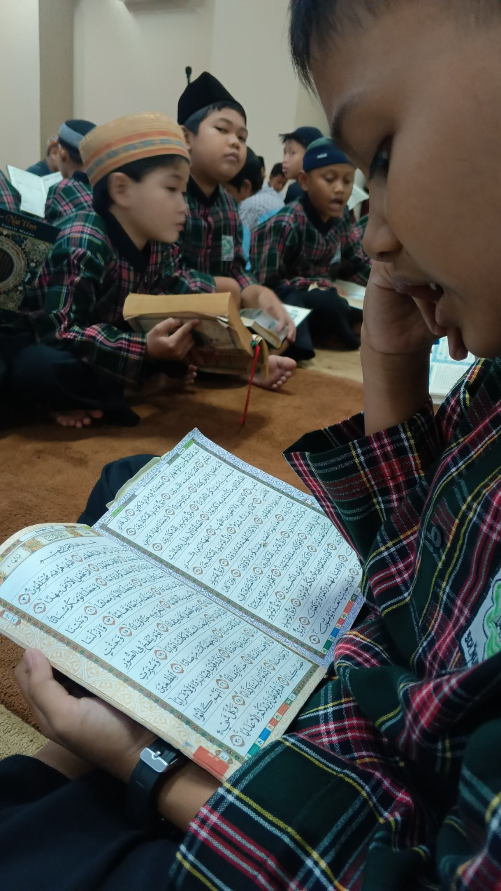
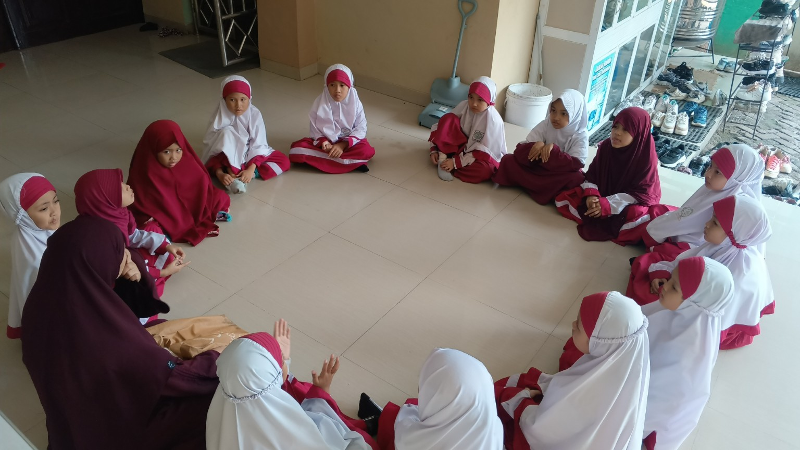
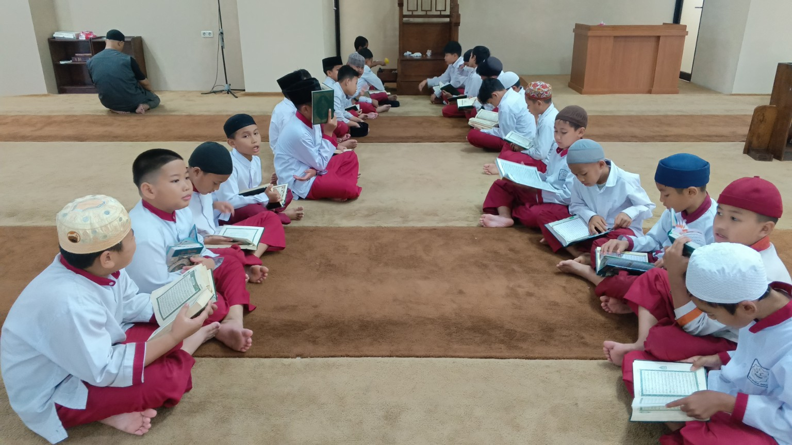
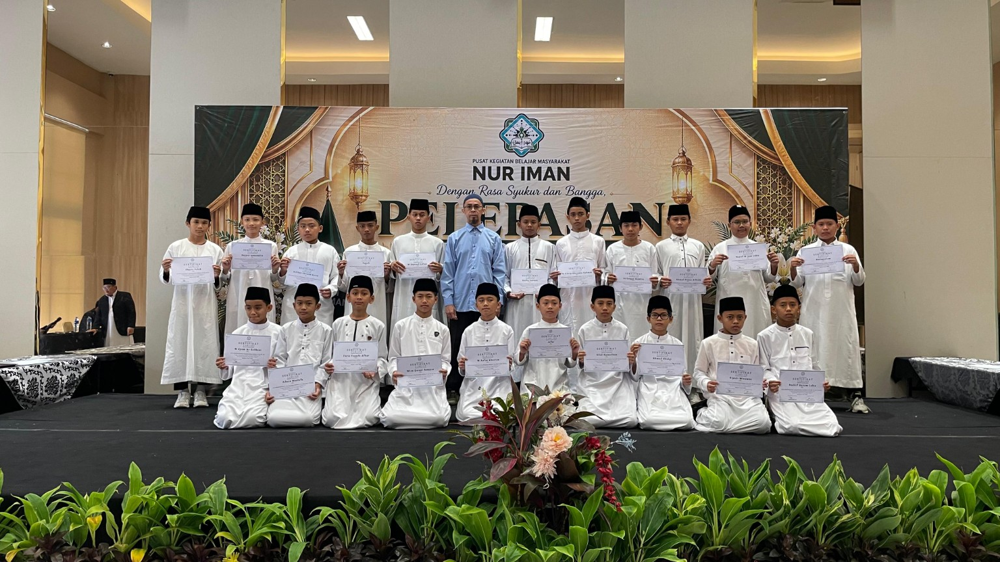
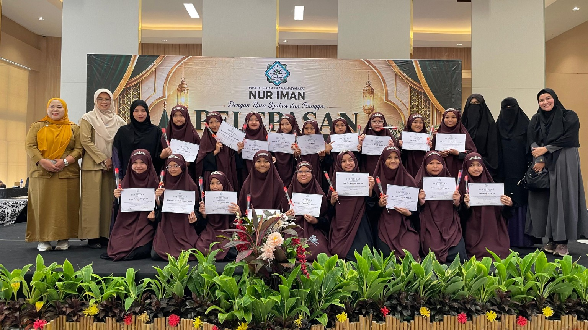

Beranda / Galeri
DOKUMENTASI SEKOLAHGaleri Kegiatan
Jejak kegiatan dan perjalanan belajar NUR IMAN ISLAMIC SCHOOL.

CERITA DI BALIK DOKUMENTASI
Setiap proses belajar menyimpan cerita.
Dokumentasi ini merekam kegiatan pembelajaran Al-Qur’an, pembinaan, dan momen kelulusan peserta didik SD. Setiap foto ditempatkan sesuai jenjang dan arsip yang telah dipetakan.
Galeri umum menampilkan dokumentasi SD. Foto SMP hanya ditampilkan pada halaman Profil SMP.
Lihat dokumentasi SMP →


